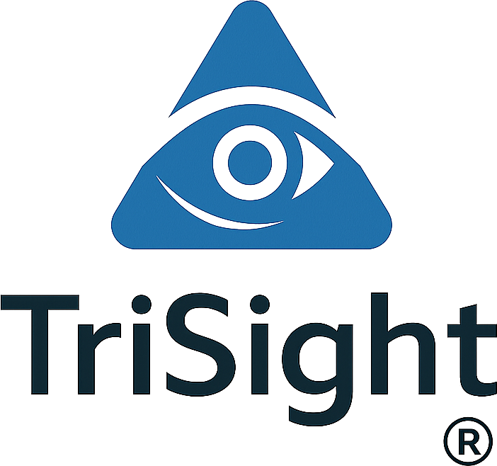

トライサイトの各システムが、何をするものか・いつ使うか・何を入れて何が出てくるかの説明です。書いてある内容は各画面に書かれている説明から取っています。「」で囲んだボタンや欄の名前は、開くたびに今の画面と照合しています（✓は今の画面にある名前、✕は見当たらない名前です）。
いま公開されている画面そのものから読み取った、見出しごとのボタン・リンク・入力欄の並びです。画面の版が上がると、ここも自動で変わります。
画面をまたぐ作業の流れです。手順に出てくる名前は、開くたびに今の画面と照合しています（✓は今の画面にある名前、✕は見当たらない名前です）。
やりたいことを書いてください。今の画面から読み取った内容だけを使って、どの画面の、どの見出しの下の、どのボタンかを順に答えます。
答えに出てくるボタンなどの名前は、出す前に今の画面と照合します。画面に無い名前が一つでも入っていた答えは出しません。
知っていると手間が減る使い方です。ここに出てくる名前も、今の画面と照合しています。
トライサイトシステム本体の3人のAIに、どの会社のAIを使うかを、ご契約のときに決めるための考え方です。
標準版は、通常の構成（理論＝OpenAI、検証＝Claude、評価＝OpenAI）で固定です。トライサイト プロバージョンは、ご契約のときに役割ごとに使うAIを決めていただき、その組み合わせで固定してお届けします。画面の操作で組み合わせが変わることはありません。組み合わせを変えたいときは、トライサイトへご相談ください。
いまの組み合わせは、トライサイトシステム本体の起動画面で確かめられます。あずさ・なぎさ・つかさの3枚のカードのいちばん上に役割の看板（理論AI・検証AI・評価AI）があり、名前のすぐ下に、使っているAIの名前が出ています。
理論AI（あずさ）：起案者の目的と立ち位置から、構想を広げて理論に組み立てます。
検証AI（なぎさ）：理論の筋道・前提・懸念を点検し、足りないところを補います。
評価AI（つかさ）：実現できるか、どんな危険があるかを判定し、起案者の判断材料にまとめます。
1. 検証AIは、理論AI・評価AIと別の会社にする
同じ会社のAIが続くと、同じ癖や思い込みが点検を素通りしやすくなります。真ん中に別の会社のAIを挟むことで、理論と評価の間に違う目が入ります。通常の構成（OpenAI・Claude・OpenAI）は、この形になっています。
2. 理論AIと評価AIは、同じ会社でもかまいません
3人はそれぞれ別々に動き、前のAIの考え方を引き継ぎません。次のAIには、前のAIが書いた結果だけが届きます。そのため、同じ会社でも、構想を広げる役と冷静に判定する役は分かれます。
3. 迷ったら、通常の構成の形のまま決める
通常の構成（OpenAI・Claude・OpenAI）は、当社が役割の分け方に合わせて決めた組み合わせです。特に理由がなければ、この形のまま、標準か最上位かだけを決めるのが確実です。
各社のAIには「標準」と「最上位」があります。最上位は、難しい起案や長い資料を扱うときに力を発揮しますが、答えが返るまでの時間と利用料が増えます。日常の起案が中心であれば標準で足りることが多く、難しい起案が多い使い方であれば最上位が向きます。
起動画面の「ワークフロー開始」の下に、小さな字で「使用中のAI」の行があります。ここに、実際に使ったモデルの名前が出ます。名前の後ろに「（新しいモデルが使えず前のモデルで実行）」と出たときは、決めたモデルがその時は使えず、当社が用意した一つ前のモデルで動いた印です。結果は出ていますが、気になるときは、時間をおいてもう一度流してください。
各社のAIは、定期的に新しいものへ入れ替わります。組み合わせに使えるのは、当社が各社の公式の一覧で名前を確かめたものだけです。確かめた日は「使用中のAI」の行の最後に出ています。